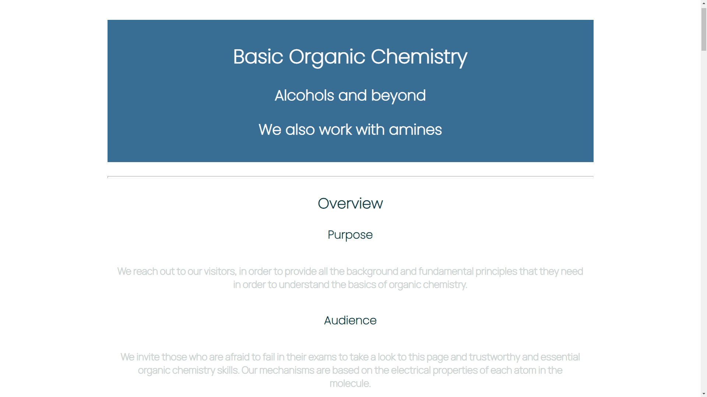
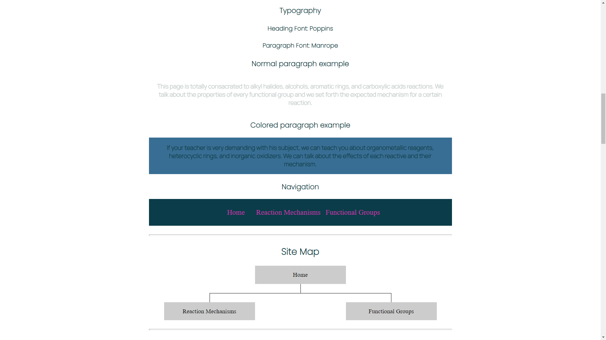
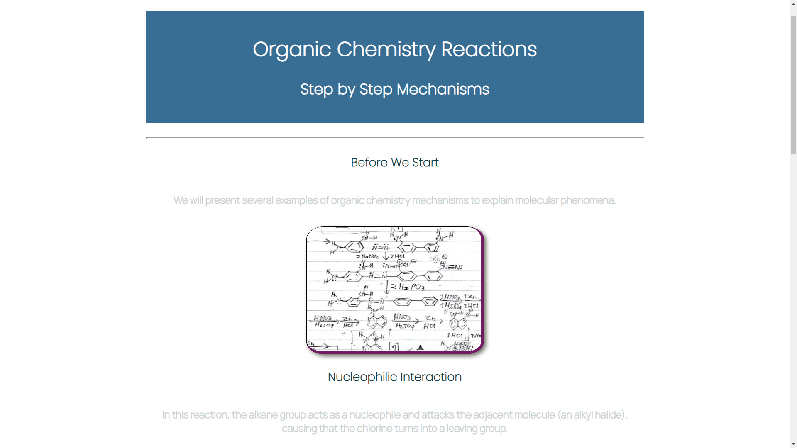
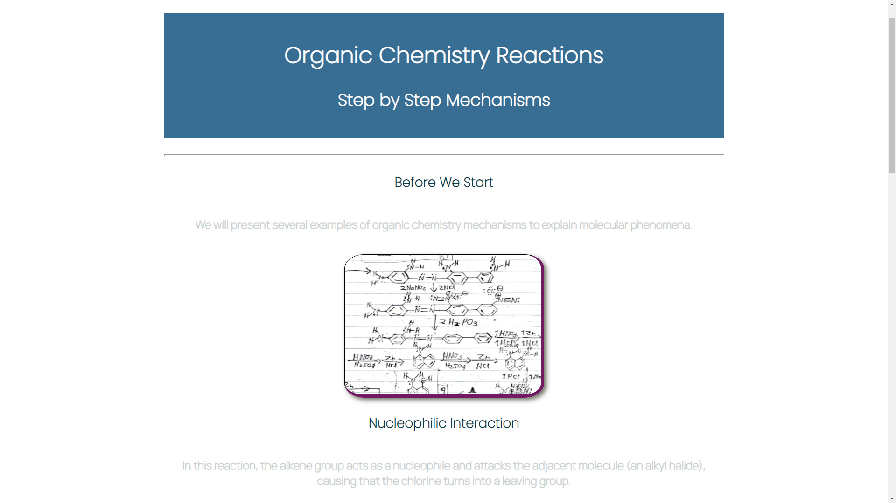
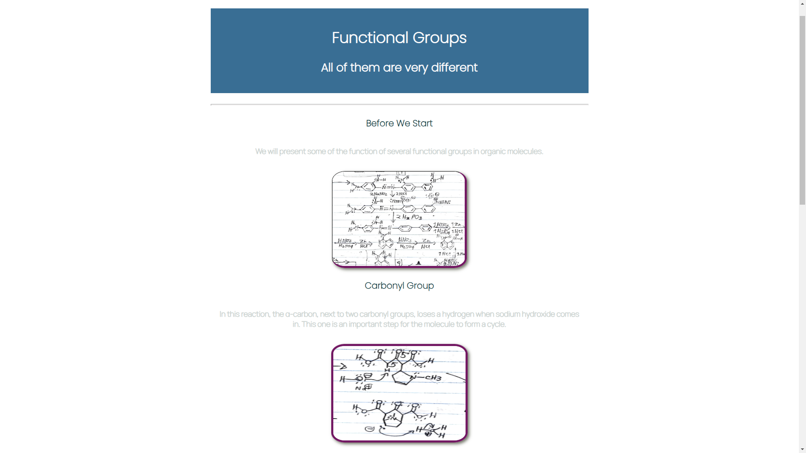

Overview

Purpose
We reach out to our visitors, in order to provide all the background and fundamental principles that they need in order to understand the basics of organic chemistry.
Audience
We invite those who are afraid to fail in their exams to take a look to this page and trustworthy and essential organic chemistry skills. Our mechanisms are based on the electrical properties of each atom in the molecule.
Branding
Website Logo
Style Guide
https://coolors.co/0b3c49-731963-fffdfd-cbd2d0| Primary | Secondary | Accent 1 | Accent 2 |
|---|---|---|---|
| [#0B3C49] | [#731963] | [#FFFDFD] | [#CBD2D0] |
Typography
Heading Font: Poppins
Paragraph Font: Manrope
Normal paragraph example
This page is totally consacrated to alkyl halides, alcohols, aromatic rings, and carboxylic acids reactions. We talk about the properties of every functional group and we set forth the expected mechanism for a certain reaction.
Colored paragraph example
If your teacher is very demanding with his subject, we can teach you about organometallic reagents, heterocyclic rings, and inorganic oxidizers. We can talk about the effects of each reactive and their mechanism.
Navigation
Site Map
Content
Home Page
The Home Page is the place where the user starts to have interest in the web page. Is the place where he or she discovers the amplitude of the material that we have to offer, and decides to dive into our child pages.
Images for the Home Page

Reaction Mechanisms
The Reaction Mechanisms child page will contain general examples for the transformation of alcohols to carboxylic acids, amines to amides, carboxylic acids to esters, etc. We will include reactions as the following: Alcohols and alkyl halides – Williamson ether synthesis – 3 more ways to make ethers - Epoxides from alkenes – Ring opening of epoxides under acidic and basic conditions – Oxidation of alcohols – Replacement of alcohols with halides using SOCl2 or PBr3 – Conversion to tosylates – Reduction of esters, carboxylic acids, aldehydes, and ketones – Grignard Reaction - Addition of Organolithiums – Reduction by sodium borohydride (NaBH4) - Reduction by lithium aluminum hydride (LiAlH4) - Addition of cyanide ion to form cyanohydrins - Addition of hydroxide ion to form hydrates - Addition of alkoxide ions to form hemiacetals. Also, we want to introduce concepts of Organic Chemistry to the people. As the American Chemical Society says: "Organic chemistry is the study of the structure, properties, composition, reactions, and preparation of carbon-containing compounds. Most organic compounds contain carbon and hydrogen, but they may also include any number of other elements (e.g., nitrogen, oxygen, halogens, phosphorus, silicon, sulfur). Organic Chemistry is a highly creative science that allows chemists to create and explore molecules and compounds. Organic chemists spend much of their time developing new compounds and finding better ways of synthesizing existing ones." There is a world of things to explain about Organic Chemistry: alkanes turning into haloalkanes in the reaction with chlorine gas and ultraviolet light, alcohols turning into alkenes in acid medium, alkynes turning into alkanes in acid medium, ethers acting as disolvents in the reactions of aromatic rings, epoxide rings opening to create alcohols, haloalkanes reacting with magnesium to form an organometallic reagent, aldehydes turning into alcohols in the reaction with organometallic reagents, esters turning into carboxylic acids in acid medium, and many other reactions.
Images for Reaction Mechanisms


Functional Groups
The Functional Groups child page will contain fundamental information about the function and characteristics of chemical groups such as -amino, -hydroxy, -alcoxy, -thiol, etc. Each functional group in Organic Chemistry executes a specific function in a reaction. As Morsch, et al., writes in his Organic Chemistry book: "Covalent bonds form when electrons are shared between atoms and are attracted by the nuclei of both atoms. In pure covalent bonds, the electrons are shared equally. In polar covalent bonds, the electrons are shared unequally, as one atom exerts a stronger force of attraction on the electrons than the other. The ability of an atom to attract a pair of electrons in a chemical bond is called its electronegativity. The difference in electronegativity between two atoms determines how polar a bond will be. In a diatomic molecule with two identical atoms, there is no difference in electronegativity, so the bond is nonpolar or pure covalent. When the electronegativity difference is very large, as is the case between metals and nonmetals, the bonding is characterized as ionic. No electronegativity difference between two atoms leads to a non-polar covalent bond. A small electronegativity difference leads to a polar covalent bond. A large electronegativity difference leads to an ionic bond." A bond is something that is created when two orbitals, from two atoms, merge into what might be considered a single orbital. In this overlap, the atoms share electrons, protect each other, unite two chains or two rings into a single molecule, and work with electrical fields to survive in the medium that surrounds them. Richard P. Feynman once said: "A process in which the rearrangement of the atomic partners occurs is what we call a chemical reaction."
Images for Functional Groups


Wireframes
Each of the following images correspond to the wireframes for the Home Page and the two child pages, of my personal site project.
Home
The Home Page contains the links for the Reaction Mechanisms child page, and the Functional Groups child page. The Home Page will have a header with the title, a subtitle, a logo, and an overview with the purpose of the page.
Every page in this project will have a nav bar, and a site map like the following:
Reaction Mechanisms
In this child page, we will include a list of frequent asked questions, with its proper answer. The Reaction Mechanisms page will have a header with the title, a subtitle, the name of the reactions, and images for every reaction.
 

Functional Groups
In this child page, we will include the properties of the functional groups, just as coordination number and pka/pkb. The Functional Groups page will have a header with the title, a subtitle, the name of the functional groups, and images of reactions where the functional group is involved.
